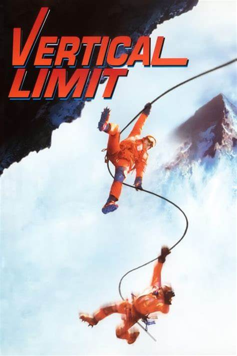

Vertical Limit
|  |
SinopsisPeter Garret es un joven fotógrafo deportivo que vive atormentado por el recuerdo de su padre, que sacrificó su vida durante una escalada para salvarlo a él y a su hermana Annie. Con los años, Annie se ha convertido en una experta escaladora que forma parte de un equipo de ascensión al K-2. Sin embargo, cuando un error en la previsión meteorológica provoca un grave accidente en el que se ve implicada, Peter decide arriesgar su vida junto a otros voluntarios para rescatarla. |
|---|